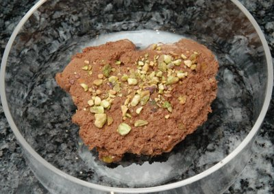

| Zutaten für 4 Personen: | |
| 2 | Eiweiss |
| 1 Prise | Salz |
| 2 El | Zucker |
| 1/2 Becher (100g) | Schlagrahm |
| 50 g | Pistazienkerne |
| 100 g | Zartbitter- Kuvertüre |
| 30 g | weisse Schokolade |
Zubereitungszeit: 25 Minuten, Kühlzeit mindestens 3 Stunden
Eiweiss mit dem Salz 1/2 Minute auf der mittleren Stufe des Handrührgerätes schaumig schlagen. 1 El Zucker dazugeben, auf der höchsten Stufe zu steifem Schnee schlagen. Kühl stellen.
Die Schlagsahne mit dem restlichen Zucker steif schlagen und ebenfalls kühl stellen.
Die Pistazienkerne fein hacken.
Die Kuvertüre hacken und im warmen Wasserbad schmelzen lassen. Im kalten Wasserbad unter ständigem Rühren lauwarm abkühlen lassen. Die Kuvertüre muss noch flüssig, darf aber nicht mehr heiss sein.
Die lauwarme Kuvertüre vorsichtig mit dem Eischnee mischen. Die Sahne und die Pistazienkerne (1 Tl übrig lassen) unterheben. die Mousse in eine Dessertschüssel füllen und mindestens 3 Stunden, am besten über Nacht kühl stellen.
Weiss Variante:
Zum servieren mit einem nassen Esslöffel von der Mousse Klösschen abstechen und auf vier Teller anrichten. Weisse Schokolade darüber reiben und die übrigen gehackten Pistazienkerne aufstreuen.
Schokoladen-Mousse lässt sich auch ganz in Weiss zubereiten. Dafür wird am besten weisse Kuvertüre verwendet. Geben Sie nur 1 El Zucker zum Eiweiss dazu und rühren Sie keinen Zucker unter die Schlagsahne, da weisse Kuvertüre süsser schmeckt als die dunkle.
Ca 370 kcal pro Portion ~ 1550 kJ
Werbeblatt zur Leicht und Lecker Rezeptserie.
Des Schokoladenmousse war sehr gut. Die Pistazienkerne auf der Deko waren nicht jedermanns Sache. Im Mousse geben sie einen willkommenen Biss. Ich fand nur gesalzene Nüsse vielleicht gibt es die auch ungesalzen und das schmeckt besser? RE 11.4.2010
@LINKBACK_TAG@ @WAKELOCK@